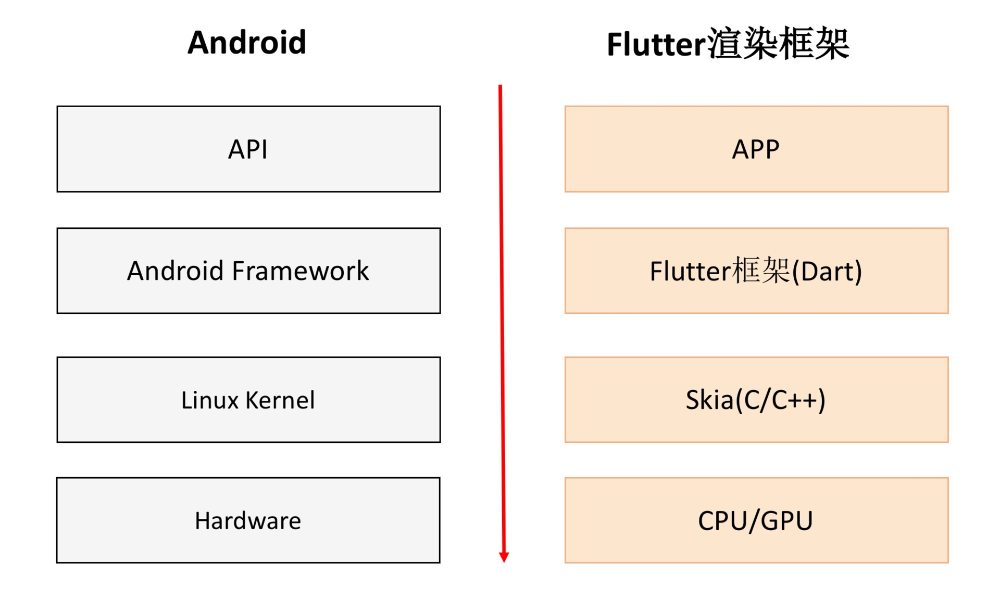
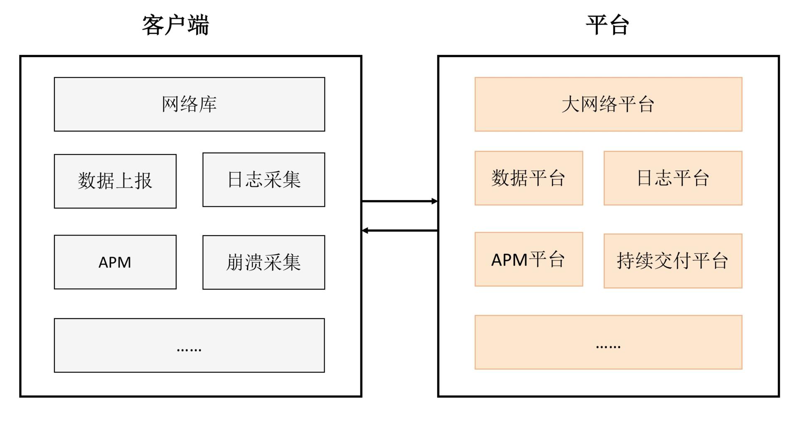
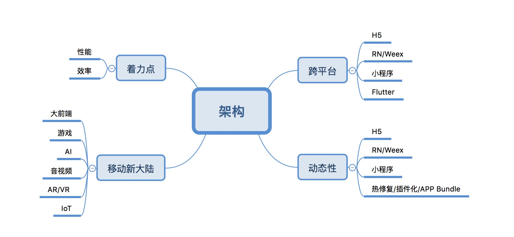

不知不觉，“Android 开发高手课”上线更新到现在，已经陪伴了大家 140 多天，转眼间到了不得不说“再见”的时候。回想半年前开始筹备这个专栏时，当时焦虑和浮躁是移动开发者比较普遍的心态，而作为移动开发者的一份子，希望通过这个专栏可以分享一些我的经验，帮你克服焦虑，拥抱未来无限可能。
我的专栏希望通过质量、效率以及架构三个角度来说明一个移动开发高手应该具备的特质。“高质量开发”模块，希望让你知道 Android 开发并不是那么简单，一个 Android 高手需要具备从上层到底层“通关的”能力。Flutter就是一个非常好的例子，这里建议你回顾一下《想成为 Android 高手，你需要搞定这三个问题》。

稳定性、内存、网络、渲染、I/O…你可以选择其中一两个点深入往底层走走，打造自身的技术壁垒，当团队内部如果遇到相关问题（比如虚拟机、渲染、数据库）的时候，第一时间就会想到你来解决。
而“高效开发”模块希望告诉你一个开发高手不仅仅有“深度”，还需要有“广度”。移动开发早已经过了“单兵作战”的年代了，服务化、前后端一体化越来越重要，这里也推荐你回顾一下《做一名有高度的移动开发工程师》。

这里要求我们学会跳出客户端的范畴，具备全链路优化的思维。一个真正的开发高手应该不仅能把性能优化多少倍，而且还能带动整个团队提升开发效率。
最后一个模块是“架构演进”，我希望告诉你架构是为性能和效率服务的。无论是 H5、React Native/Weex、小程序、Flutter，还是类似游戏、音视频、AI 这些移动开发“新大陆”，它们都是殊途同归。

对于移动开发的今日，在学完专栏以后，我希望你能体会到下面这两点：
-
移动开发并不简单。想成为一名移动开发高手并不简单，它需要非常深入的学习。当然学完专栏几十篇文章，你也不可能立刻就成为了一名高手，俗话说“师傅领进门，修行靠个人”，在专栏以外你还需要进一步深入学习更多的知识，积累更丰富的经验。
-
移动开发生命力依然顽强。移动开发很有前途，而且这个领域不仅局限于 Android 开发。我们的出路其实有很多很多，只要我们肯拿出折腾 Android 的热情，用从上到下“通关”的钻研精神，无论是转向 iOS，还是游戏、前端等其他的领域，我相信绝对都是“降维打击”。
但是不可否认，如今的移动开发已经不再是“风口上的猪”，对于初级移动开发者的岗位越来越少，大厂的要求也随之变得越来越严格。类似微信、头条、阿里，他们都对候选人在算法和底层基础知识考究得非常深入。
但是我相信只要你认真学习完这个专栏，对面试大厂会有非常大的帮助。专栏里提到的很多知识点，目前其实很多大厂也还做得不够完善。正如前面所说，你可以找其中一两个点作为进入大厂的突破口。
而对于 Android 的未来，个人认为会有下面两个变化：
-
合规和用户隐私越发重要。无论被称为史上最严厉的欧盟 GDPR 法令，还是 Android Q 用户唯一标识、权限等最新限制，都可以清楚看到未来对用户隐私和权限更严格限制的趋势。
-
中国的声音会越来越大。以往我们总说 Copy to China，现在更多的是 Copy from China。无论是 Google 还是苹果，都无法忽视我们 13 亿人的巨大市场。比如说 Android Q 就为了中国的热修复框架，专门提供新的接口。
对于移动开发的未来，可能未来的新设备将颠覆手机，也许是嵌入式设备、智能眼镜、车载设备等，但这些设备仍然还是移动设备。从当下的技术发展来看，我很期待今年的 Facebook F8和 Google I/O 大会（我今年也会去现场观摩，欢迎面基～）。比如说 Facebook 今年计划开源很多好东西，例如 React Native 新版本、启动优化测量等。
“三星凉了，宝洁药丸，诺基亚衰落，苹果下凡，国外品牌都挺惨…”，但现实情况却是三星依然在全球称霸。在我看来，“Android 开发要完，移动开发要完”也是这个道理。我们不应该焦虑，也不需要浮躁，没有不过时的技术，不过时的只有学习能力和态度。
“唯有学习，不可辜负”。Android 开发的路很长也很宽，我们既可以往底层走，也能往大中台走，还可以去看看 IoT、游戏、AI。未来的机会还有很多很多，只要我们找准方向，积极拥抱变化、迎接挑战，每个人都可以走出一条自己的“光明大道”。
不过在工作学习之余，我也奉劝各位同学一定要锻炼好身体，无论什么时候身体都是第一位。我们的职业生涯非常漫长，脑力、体力、心力三者缺一不可。
非常感谢订阅专栏和我一路走来的同学们，因为你们的鼓励让我充满激情，驱使我呈现出最好的内容。最后祝愿你们未来无论是从事哪方面的工作，都能成为一名真正的高手。
到了说再见的时候了，各位潜水的同学都来冒个泡吧，我希望听听你这几个月学习的心得和收获，自己在工作和生活有什么变化，2019 年的 Flag 完成得如何了？我们可以在专栏里畅所欲言、把酒言欢。
COMMUNITY NOTES
读者评论
这不是我买的第一个课程，但是却是我第一个学习完的课程，庆幸自己140多天来一直坚持着，没有落下。工作比较忙，只是全部学完了，但是针对其中的一些课后研究内容还没有学完，这个课程里面的技术和思想不会过时，准备反复钻研和学习。视野开拓了很多，观念也转变了很多，虽然现在还不是高手，但是坚持下去，终不会太差。感恩张老师，祝福一路同行的人。
感谢分享，收获很多。
突然有个提议，感觉可以建个这个专栏的学习交流群，毕竟估计也有很多人没有跟上进度，或者即使学完一遍也值得后续复习，这个可以由某个同学来建，也可以是我,当然了如果老师能主持就更棒了^^。
感谢带我们领略了高级工程师的视野
感谢老师的倾囊相授，这几个月真的是开拓了视野！从文章中就可以发现，老师不仅内功深厚，还对安卓相关的新动态有所关注与研究！老师都动起来了的时候，而此时的我还在原地观望，发现自己需要学习补充的还有很多。也很高兴自己坚持练习了老师布置的课后作业，有部分的知识也应用到了日常的开发当中，真的收获满满！后面就是二刷三刷，温故知新。最后期待老师以后可以给我们很多的分享！
看了所有课程 知识面拓宽了很多 这里想请教一下 平时要怎么样才能实时的了解技术的变化 比如Android各个版本中的差异 作者能把一些变化的细节都了解的这么清楚 是如何做到的呢？
通过这个专栏，开阔了眼界，意识到基础知识的重要性，从java到linux系统。一直做的整机开发，应用，协议，fwk的都搞过，也用vb,python,shell搞过小工具提升效率，老感觉缺点系统性的知识框架，专栏看了一遍，决定先从插桩这一块深入研究哈
非常感谢张老师，我也算是具备多年Android开发经验的工程师，一直觉得自己能力还算可以，但看完专栏后，发现自己的知识深度和知识广度还远远不够。通过这个专栏，我深深的认识到了自己的不足，也正在花很大的精力去弥补。这是我看过的收获最大的课程，已经在开始看第二遍，同时将文中提到的知识点、业界类似的解决方案、本人几年的经验整理到一起，输出一个详细的技术栈，作为对自己工作的一个总结和鞭策。再次感谢张老师，希望很快看到您的下一部大作。也祝福一起学习的同学们。
今天邵文老师比较有空，大家有啥要问的赶紧的勒！我先来：如果一个人已经具备了找准了学习方向，也能每天静下心来坚持学习，那么此时应该考虑的就是学习效率提升的问题。之前邵文老师分享的主要是让大家能够静下心来坚持学习，那么老师能否分享下达到那个阶段后的具体的学习方法呢？学习不存在捷径，但肯定有方法/效率之分的。
邵文老师的专栏质量真的很高，虽然没紧跟进度，后续肯定会认真学完的。之前分享了很多次没人买,今天最后一篇文章请别人读没想到有人上车了！
冒个泡，每天上下班开车的时候听的，不知不觉也听完了。感谢绍文！
这是我买的第一个含金量最高的课程。期待绍文更多专栏。
唯有学习，不可辜负
看到结束语了，可以开始学习了。毕竟我不喜欢等更新 。
Android 开发历经大浪淘沙，初级的岗位越来越难做，得找到一个方向深入才行。什么都懂，不代表什么都精，首先培养深度，然后才是广度，我觉得是这样。
老师，我想求教一个问题，就是安卓移端访问后台接口报502错误，但是苹果端访问一直没问题，您有什么见解吗？
今天不在忙，直接先看看最后一篇，希望19年能够看完1遍专栏，大家互勉吧！
一口气补完了专栏，有时候限制我们的不只是技术，更是视野，山外有山，天外有天，看到更广阔的天地自己才会更加努力的去奔跑，加油！
感谢🙏🙏
物超所值，